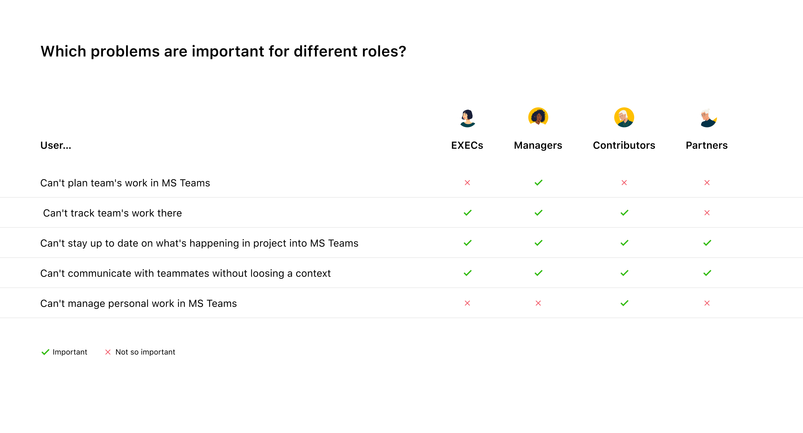
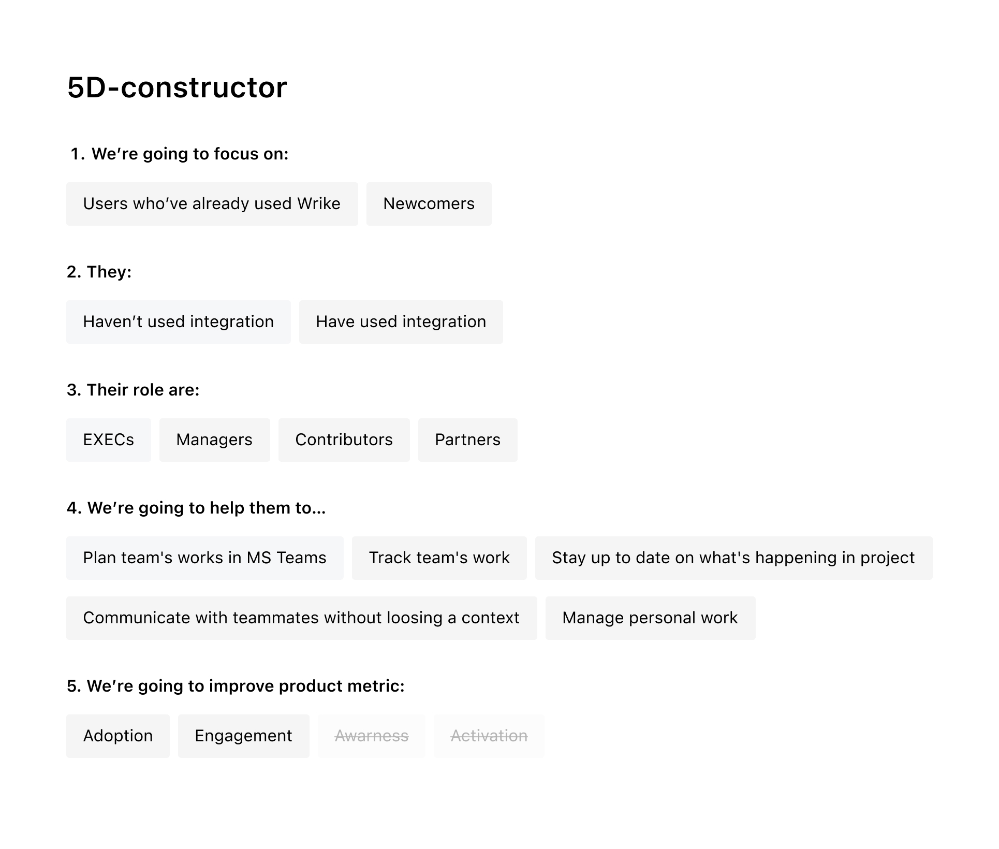
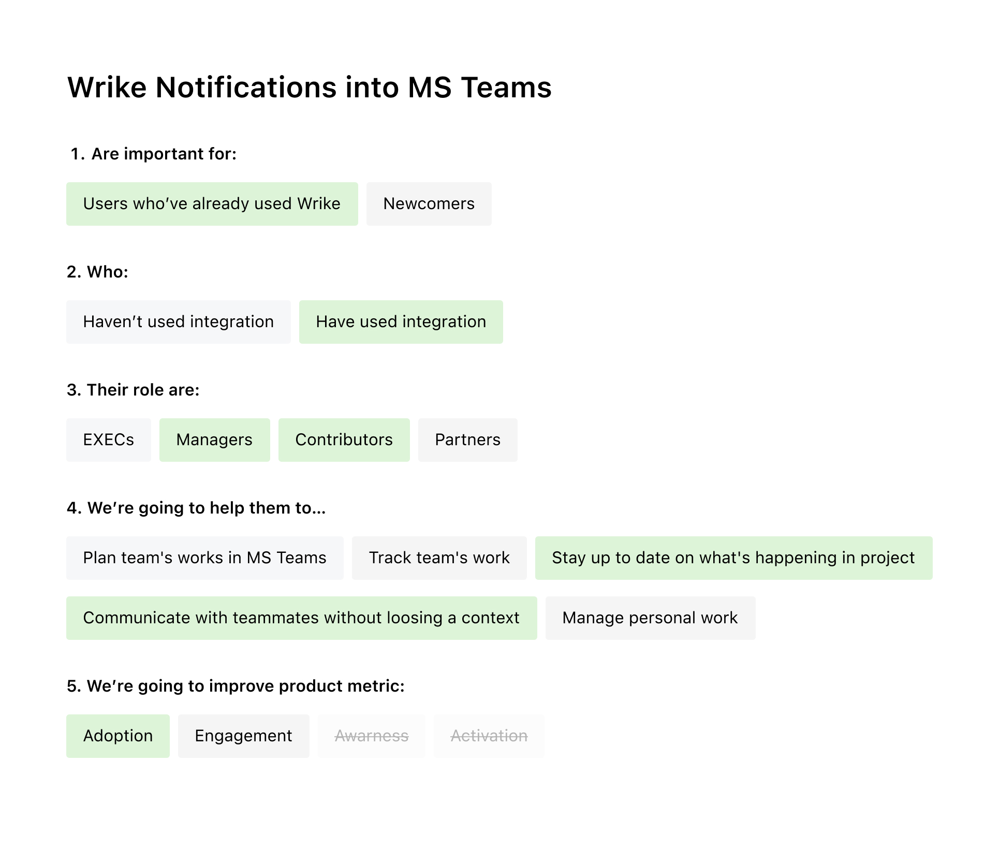

<!DOCTYPE html>
<html>
  <head>
    <meta charset="utf-8"/>
    <meta name="viewport" content="width=device-width, initial-scale=1.0"/>
    <meta property="og:type" content="article"/>
    <meta property="og:title" content="Как перестать блуждать ёжиком в тумане и улучшать продукт разумно • Артём Самсонов • Продуктовый дизайнер"/>
    <meta property="og:description" content="Рассказываю на примере интеграции между двумя системами, как перестать делать лишнюю работу и реально помогать пользователям"/>
    <meta property="og:image" content="http://artemsamsonov.com/img/default.jpg"/>
    <link href="https://fonts.googleapis.com/icon?family=Material+Icons" rel="stylesheet"/>
    <link rel="stylesheet"/><!-- Yandex.Metrika counter --> <script type="text/javascript" > (function(m,e,t,r,i,k,a){m[i]=m[i]||function(){(m[i].a=m[i].a||[]).push(arguments)}; m[i].l=1*new Date();k=e.createElement(t),a=e.getElementsByTagName(t)[0],k.async=1,k.src=r,a.parentNode.insertBefore(k,a)}) (window, document, "script", "https://mc.yandex.ru/metrika/tag.js", "ym"); ym(57652780, "init", { clickmap:true, trackLinks:true, accurateTrackBounce:true, webvisor:true, trackHash:true }); </script> <noscript><div></div></noscript> <!-- /Yandex.Metrika counter -->
    <title>Как перестать блуждать ёжиком в тумане и улучшать продукт разумно • Артём Самсонов • Продуктовый дизайнер</title>
  <link href="./css/style.bundle.css" rel="stylesheet"></head>
</html>
<body class="body_light">
  <header class="header header_light">
    <div class="header__logo"><a class="header__logo-link" href="index.html">Артём Самсонов</a></div>
    <!--div.header__menu
    a.header__menu-elem(href="http://artemsamsonov.com/skills") Навыки
    a.header__menu-elem(href="http://artemsamsonov.com/my-experience") Работы
    a.header__menu-elem(href="http://artemsamsonov.com/#contacts") Контакты
    -->
  </header>
  <div class="content">
    <div class="article">
      <h1>Как перестать блуждать ёжиком в тумане и улучшать продукт разумно</h1>
      <p class="article__annotation">Рассказываю на примере интеграции между двумя системами, как перестать делать лишнюю работу и реально помогать пользователям.</p>
      <div class="article__list">
        <h4>Содержание статьи</h4><a href="#intro">Предисловие. Как мы допустили ошибку</a><a href="#step1">Этап 1. Общаемся с клиентами</a><a href="#step2">Этап 2. Формируем стратегию</a><a href="#step3">Этап 3. Выбираем конкретные задачи</a><a href="#step4">Был ли данный эксперимент полезен?</a>
      </div>
      <h2 id="intro">Предисловие. Как мы допустили ошибку</h2>
      <p>Если вы хотите управлять проектами, одного приложения недостаточно. Именно поэтому work-management платформы Wrike, Asana, Jira охотно интегрируются с приложениями вроде Zoom, Outlook или Slack — они хотят сделать работу клиентов более связной и комплексной.</p>
      <p>Нередко платформы интегрируются с другими продуктами наобум — добавляют свои самые популярные функции в чужую экосистему и напрасно ждут успеха. Компания Wrike допустила ту же ошибку. Наше приложение для MS Teams было лишь бледной копией основной версии. Пользователи MS Teams устанавливали интеграцию Wrike из внутреннего маркетплейса, но почти не использовали её в ежедневной работе. Аудитория интеграции росла медленно, компании не докупали расширенные планы.</p>
      <p>Пока мы тратили время и ресурсы на поддержку приложения в чужой экосистеме, наши пользователи переключались между окнами основных приложений и даже не вспоминали об интеграции.</p>
      <p>Тогда мы остановились и признались сами себе, что мы движемся не туда. Мы решили перепридумать интеграцию — так, чтобы она действительно была полезна как нашим юзерам, так и нашей компании.</p>
      <p>И первым делом мы решили лучше изучить наших клиентов.</p>
      <h2 id="step1">Этап 1. Общаемся с клиентами</h2>
      <p>Мы отобрали около двадцати пользователей, которые уже пробовали пользоваться Wrike-интеграцией в MS Teams. Они занимали разные должности в своих компаниях и, как оказалось, пытались решить с помощью нашей интеграции разные проблемы.</p>
      <p>После интервью мы разделили всех пользователей на четыре роли и отметили, какие именно проблемы были для них важными, а какие — второстепенными:</p>
      <p class="article__image"><a href="../img/msteams-01.jpg" target="_blank"></a>
        <!--span.article__image-caption Выявленные роли и самые популярные потребности, о которых люди рассказали на интервью-->
      </p>
      <h2 id="step2">Этап 2. Формируем стратегию</h2>
      <p>Опираясь на результаты исследований, мы составили 5D-конструктор, который вмещал в себя все возможные комбинации пользователей:</p>
      <p class="article__image"><a href="../img/msteams-02.jpg" target="_blank"></a></p>
      <p>С помощью этого конструктора мы определили наиболее приоритетное направление. Во-первых, мы решили сфокусироваться на тех пользователях, что уже знакомы с Wrike и пробовали работать в интеграции. Мы понимали, что пока мы не решим их проблемы, привлекать новых пользователей не имеет смысла.</p>
      <p class="article__image"><a href="../img/msteams-02b.jpg" target="_blank"></a></p>
      <p>Чаще всего нашу интеграцию устанавливали Работники (Contributors). Мы выбрали их нашей приоритетной ролью. Также мы выбрали две цели, которые мы поможем достичь Работникам с помощью интеграции. Мы выбрали эти цели, потому что они были максимально популярными у всех ролей. Мы надеялись, что грядущие нововведения закроют потребности максимальному количеству пользователей.</p>
      <p>Напоследок мы определили продуктовую метрику, на которую хотели повлиять:</p>
      <p class="article__image"><a href="../img/msteams-02c.jpg" target="_blank"></a></p>
      <h2 id="step3">Этап 3. Подбираем конкретные задачи</h2>
      <p>Во время интервью Работники чаще всего просили:</p>
      <ul>
        <li><span>Присылать в чаты уведомления об изменениях в проекте: смену статусов и ответственных, упоминания в комментариях</span></li>
        <li><span>Заменить плоский список задач на Проводник для того, чтобы видеть структуру проектов</span></li>
        <li><span>Добавить возможность создавать задачи прямо в MS Teams</span></li>
      </ul>
      <p>Мы наложили запросы пользователей на наш 5D-конструктор и посмотрели, какие именно просьбы совпадают с выбранным нами направлением:</p>
      <p class="article__image"><a href="../img/msteams-03.jpg" target="_blank"></a><span class="article__image-caption">Задача "Нотификации в чаты" совпала с нашей новой стратегией на 100%</span></p>
      <p class="article__image"><a href="../img/msteams-03b.jpg" target="_blank"></a><span class="article__image-caption">А вот «Создание задачи прямо из MS Teams» немного разошлась с нашими целями (уровень 4)</span></p>
      <p>Читайте подробнее: <a href="msteams-notifications.html">Как мы проектировали нотификации для MS Teams</a>
      </p>
      <h2 id="step4">Был ли данный эксперимент полезен?</h2>
      <p>Безусловно, да.</p>
      <p>Теперь, когда разработчики спрашивали нас «Почему мы делаем нотификации, а не добавляем в интеграцию дэшборды?», мы могли показать им выбранную нами стратегию и объяснить, что нотификации, в отличие от дэшбордов, улучшат жизнь наибольшему количеству пользователей.</p>
      <p>Также мы смогли двигаться по выбранному пути несколько кварталов и в конце периода сравнивать показатели до и после. Если результаты нас не устраивали, мы могли переключить наш фокус на другую комбинацию.</p>
      <p>Бизнес-департамент убедился, что мы не бродим вслепую, а планомерно изучаем сегмент за сегментом, ища точки роста для бизнеса.</p>
      <p>И, конечно же, мы сгруппировали пользователей и могли теперь проводить точечные исследования. Отныне мы приглашали разные роли потестировать новый функционал и смотрели, удалось ли нам решить их проблему.</p>
      <p>На каждый шаг у нас имелся аргумент — и это сэкономило миллионы нервов всем участникам проекта.</p>
    </div>
  </div>
<script type="text/javascript" src="./js/bundle.js"></script></body>